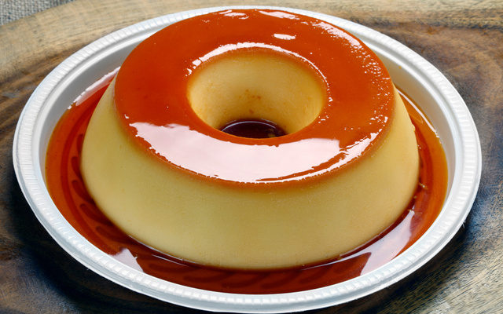

Pudim
Brazilian Flan

Time: 1h 20 min
Servings: 10
Ingredients
- 1 can sweetened condensed milk
- 2 cups milk
- 3 eggs
- 1 cup sugar (for caramel)
Instructions
- Heat the sugar in a pan over medium heat until it melts and becomes caramel. Pour into a round mold and spread it around.
- Blend the condensed milk, regular milk, and eggs until smooth.
- Pour the mixture into the caramel-coated mold.
- Cover with foil and bake in a water bath at 350°F (180°C) for about 1 hour.
- Let it cool completely, refrigerate, and unmold.